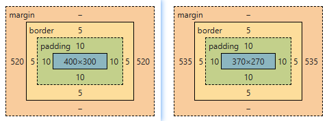

| 类别 | 说明 |
|---|---|
| width | 元素内容区宽度 |
| height | 元素内容区高度 |
| padding | 元素填充，也称内边距、内填充
可以单独设置元素4个方向的内边距：padding-top | padding-right | padding-bottom | padding-left |
| margin | 元素到其它元素之间的距离，也称外边距、外填充、空白
可以单独设置元素4个方向的外边距：margin-top | margin-right | margin-bottom | margin-left；负边距也有很惊艳的表现 |
| border | 元素边框
可以单独设置元素4个方向的边框：border-top | border-right | border-bottom | border-left |

默认情况下，设置的宽度width和高度height是内容区的宽度和高度；所以：元素盒子的实际尺寸应该是在宽度width/高度height的基础上，再加上边框border和填充padding
元素的实际宽度 = width + padding-left + padding-right + border-left + border-right 元素的实际高度 = height + padding-top + padding-bottom + border-top + border-bottom
因此，设置元素宽度和高度时，元素的实际尺寸比设置的更大；多数情况下，为了不破坏页面布局，希望设置的元素尺寸就是元素的实际尺寸；CSS属性 box-sizing
允许我们选择元素计算尺寸的模式
content-box：默认模式，元素尺寸不包括padding和border
border-box：元素尺寸包括padding和border；通常在CSS初始化样式表中指定
.box {
width: 400px;
height: 300px;
padding: 10px;
border: 5px solid #ddd;
box-sizing: border-box;//content-box
}

. padding、border、margin这三个属性有4个方向的体现，所以样式值的多少分别对应着不同的方向
1个值：4个方向都一样
2个值：上下对应第一个值；左右对应第二个值
3个值：上对应第一个值；左右对应第二个值；下对应第三个值
4个值：分别对应上、右、下、左四个方向/顺时针
对指定了大小的块元素而言，margin: xxx auto;可以使其在父元素盒子内水平居中
垂直方向居中需要结合实际情况综合考虑，见后续内容